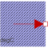

FixedTemperatureFixed temperature boundary condition in degree Celsius |

|
Information
This information is part of the Modelica Standard Library maintained by the Modelica Association.
This model defines a fixed temperature T at its port in [degC], i.e., it defines a fixed temperature as a boundary condition.
Parameters (1)
| T |
Value: Type: Temperature_degC (°C) Description: Fixed temperature at the port |
|---|
Connectors (1)
| port |
Type: HeatPort_b |
|---|
Used in Examples (4)
|
Modelica.Electrical.Analog.Examples Resistor with simple thermal network |
|
|
Modelica.Mechanics.MultiBody.Examples.Elementary Demonstrate the modeling of heat losses |
|
|
Modelica.Mechanics.Rotational.Examples Demonstrate the modeling of heat losses |
|
|
Modelica.Mechanics.Translational.Examples Demonstrate the modeling of heat losses |